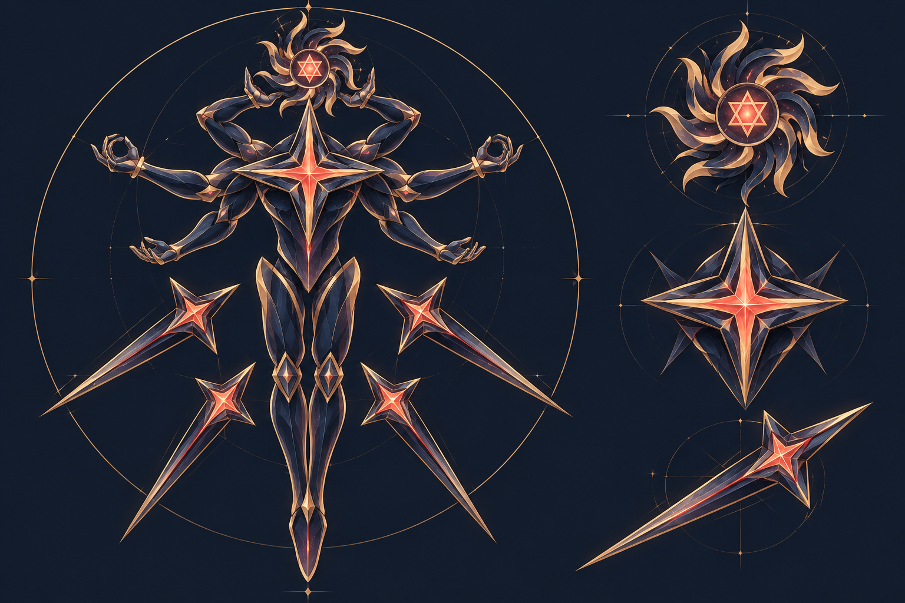
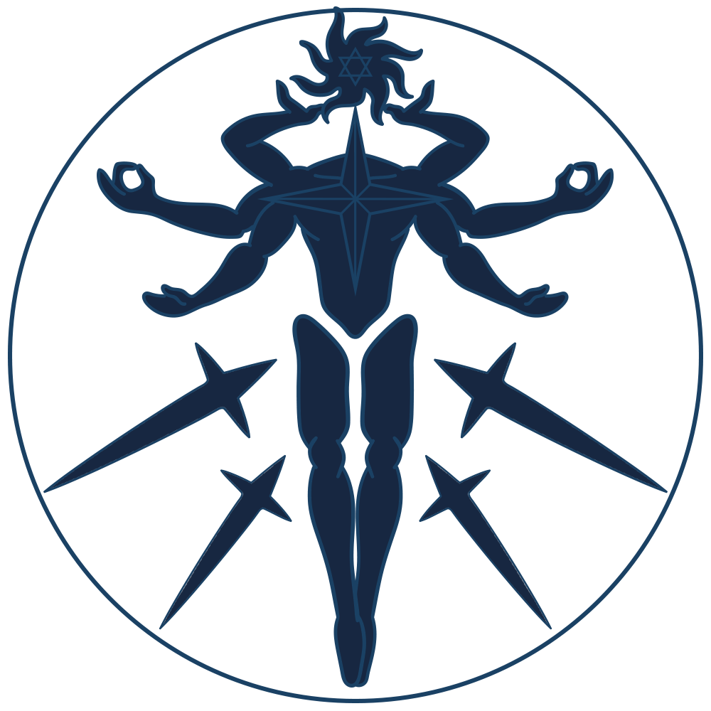
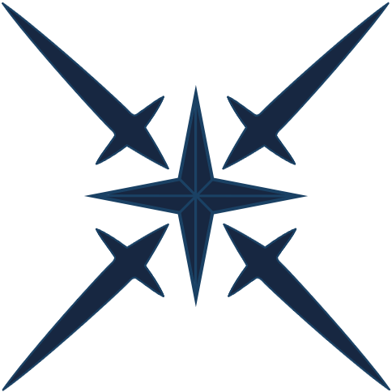
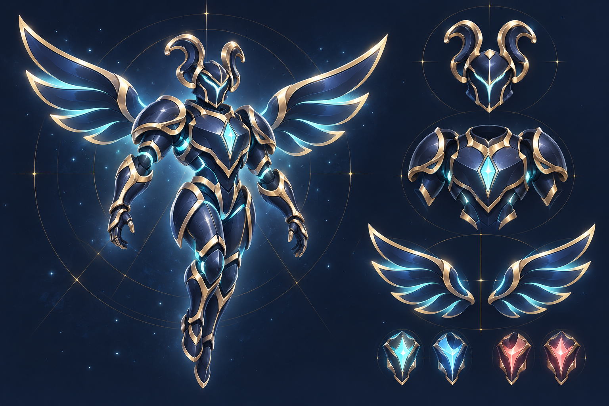
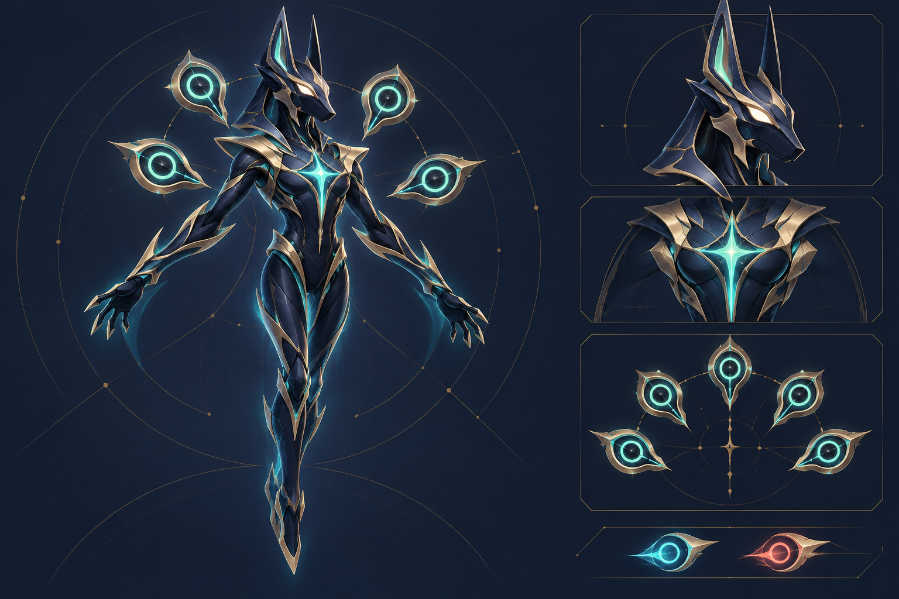
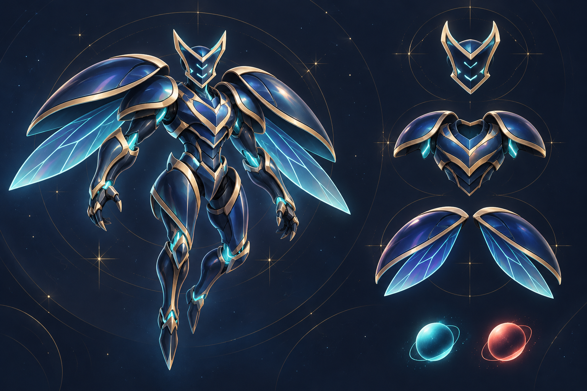

01
下載原圖 ↓造星神
六臂本體 · 旋日頭部 · 星核與浮游刃


點擊放大 ↗保留原本的神祕感與六臂輪廓。以金屬切面和內部紅光強化星核，讓頭部、胸前星芒及四把浮游星刃各自清楚。
- 維持三對手臂、懸浮姿態與旋日頭部。
- 深藍本體配暖金邊緣，紅光集中於核心。
- 細節拆成頭部、胸前星核與星刃三區。
查看原始造型對照


角色 · 配件 · 造星神
延續午夜藍與香檳金，細化裝甲層次、晶體光源與配件結構。三組角色配件，加上一位造星神，每張皆附整體造型與細節。僅供美術設計確認，尚未替換遊戲內容。
六臂本體 · 旋日頭部 · 星核與浮游刃

點擊放大 ↗保留原本的神祕感與六臂輪廓。以金屬切面和內部紅光強化星核，讓頭部、胸前星芒及四把浮游星刃各自清楚。


捲角頭盔 · 分層胸甲 · 金屬羽翼

點擊放大 ↗以捲角與展翼建立辨識度。把原本平面的線條轉成清楚的裝甲分層，羽翼維持大片羽形，讓整體有質感又不顯得零碎。
犬首面具 · 修長本體 · 五枚浮游星盤

點擊放大 ↗用修長輪廓與浮游配件呈現輕盈感。面具保留尖耳與犬首意象，背部星盤轉為獨立懸浮的透鏡單元，與羽翼形成不同的視覺特徵。
分叉角盔 · 分節甲殼 · 透明飛翼

點擊放大 ↗以圓潤甲殼和分節結構表現厚度。保留角盔、肩甲與背翼輪廓，加入微量虹彩和透明內翼，讓甲蟲套裝與其他角色一眼就有區別。